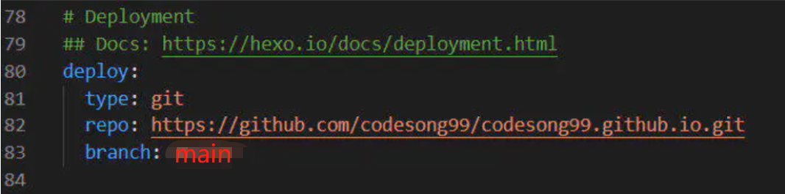

博客是传递、分享技术的一种高效途径,本文记录了一种在Github上搭建个人博客的方法，即通过hexo搭建个人博客，部署到github上。
工具及平台：
工具：hexo、git、Node.js、npm/cnpm
平台：Windows
本文以win10为例进行演示
（windows环境需已安装git并配置为环境变量）
搭建过程：
1、安装hexo
（1）安装Node.js
Node.js是一个基于Chrome V8引擎的JavaScript运行环境，能够是js运行在服务端。安装方法非常简单：
nodejs.org下载安装即可。推荐下载LTS（Long Time Support）版本
下载安装Node.js：
（2）安装NPM
NPM（Node Package Manager）是基于Node.js的包管理工具，方便开发人员分享和获取第三方包并使用。
由于NPM镜像是国外资源，安装十分缓慢，因此我们选择安装淘宝团队做的镜像cnpm。在win10环境下，以管理员身份运行CMD，输入以下命令：
1 | npm install -g cnpm --registry=https://registry.npm.taobao.org |
这样我们便完成了Node.js和NPM的安装，此时我们可以通过查询版本号的方式来验证Node.js和NPM是否安装成功：
1 | node -v |
如果出现两者的版本信息，说明我们已经成功安装了Node.js和NPM。
（3）安装hexo
使用cnpm安装hexo：
1 | cnpm install -g hexo-cli //安装hexo |
同样可以通过查询版本信息确认hexo是否安装成功：
1 | hexo -v |
2、使用hexo搭建博客
（1）创建工作路径
首先在电脑任意位置（如D盘）新建一个文件夹，比如我们命名为blog，在windows系统下，此操作可以直接在D盘操作，或用命令行创建：
1 | mkdir blog |
（2）初始化博客
进入blog文件夹并初始化博客：
1 | cd blog |
1 | hexo init |
注意：在macOS或Linux环境需以管理员身份进行操作
此时我们就通过hexo完成了博客的初始搭建，hexo会默认创建一个landscape主题。此过程有时较慢，耐心等待。
这时我们打开电脑的blog文件夹，会发现生成了许多文件，其中theme文件夹内就是我们博客的主题，后续更改主题需要在此操作。
（3）启动、生成博客
启动博客：
1 | hexo s |
启动后会出现本地访问的端口
hexo启动后，在浏览器中输入 localhost:4000 ,就可以进入我们刚刚生成的博客主页了。
（4）新建文章
windows环境下推荐直接将写好的文章放在blog/source/_post路径下：
当然也可以像macOS或Linux下使用命令行新建文章，然后进行编辑：
1 | hexo n "新建的文章" |
博客一般使用markdown格式（.md），非常方便的一种格式，网上有很多介绍，大家可以学习一下。
（5）更新博客
对博客内容、主题进行修改后，比如刚才新建了一篇文章，需要将修改更新。
一般需要在blog目录下按顺序进行清理（clean）、生成（generate）、启动（sever/start）操作：
1 | hexo clean |
1 | hexo g |
至此我们就完成了个人博客的创建，以及如何对博客进行修改等操作。不过我们的博客现在只能通过本地端口（localhost）访问调试，怎么才能让别人看到我们的博客呢？
接下来就来介绍如何将博客部署到github上进行访问。
3、将博客部署到github上
（1）在github上新建仓库
仓库名称必须为 xxx.github.io(其中xxx为自己的github用户名)，如codesong99.github.io,并得到仓库地址：
github仓库地址：
2）在blog目录下安装一个git的部署插件
1 | cnpm install --save hexo-deployer-git |
3）修改blog目录下的配置文件
打开blog目录下的_config.yml文件，在最后几行的部署（deploy）信息位置添加以下配置：
deploy配置：

部署类型为git，仓库地址为刚才获得的github仓库地址，branch设置为master，修改完成后保存并关闭。
注意冒号后有一个空格。
（4）将博客部署远端
回到CMD窗口，在blog目录下输入一下命令，将博客推到远端：
1 | hexo d |
这个”d”就是deploy的意思。此过程需要输入github账号及密码。
至此我们就完成了搭建hexo博客并部署到github上的所有工作，在浏览器中输入xxx.github.io即可访问自己的个人博客。
这样，就可以通访问并使用自己的个人博客了。